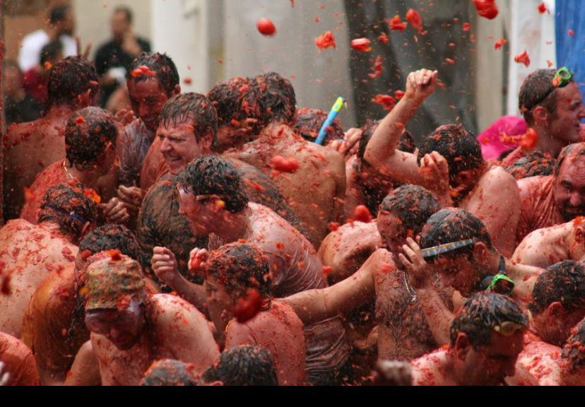
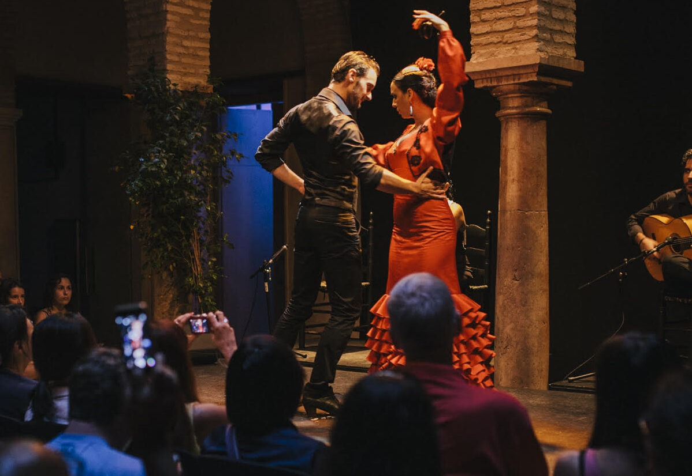
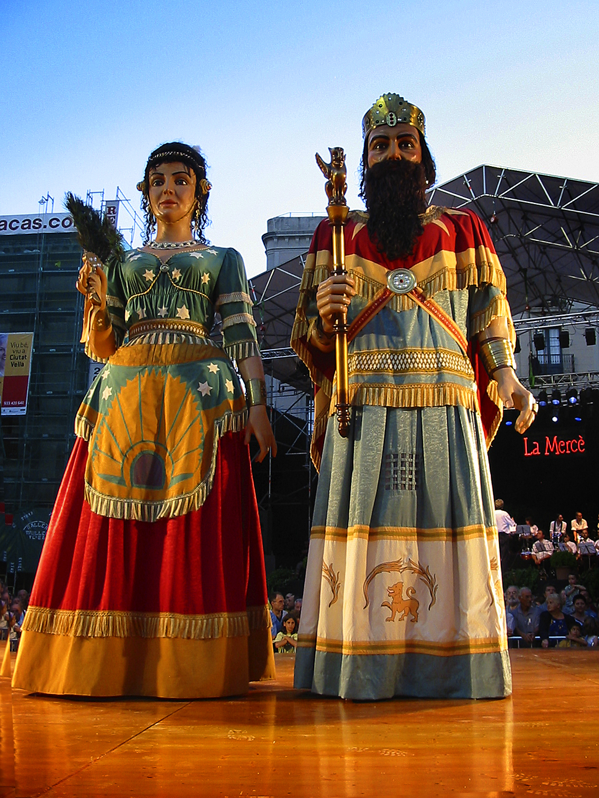
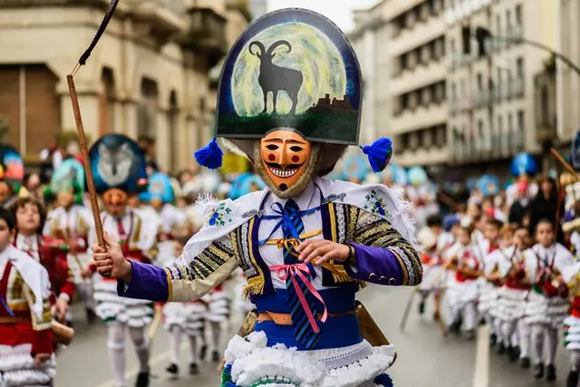

Spain’s Unforgettable Festivals & Timeless Traditions

La Tomatina

Bullfighting

Flamenco

La Mercè

San Fermín

Uncover centuries of vibrant culture, stories, and traditions that shape Spain today.